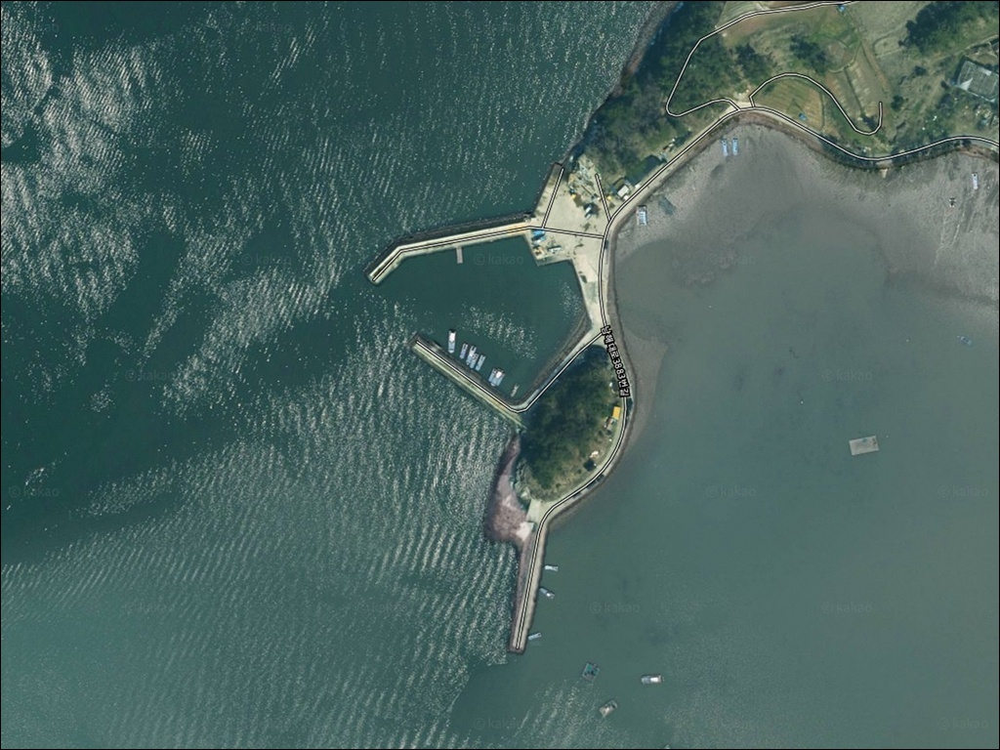
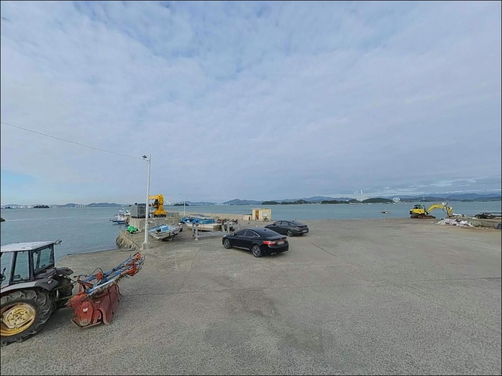
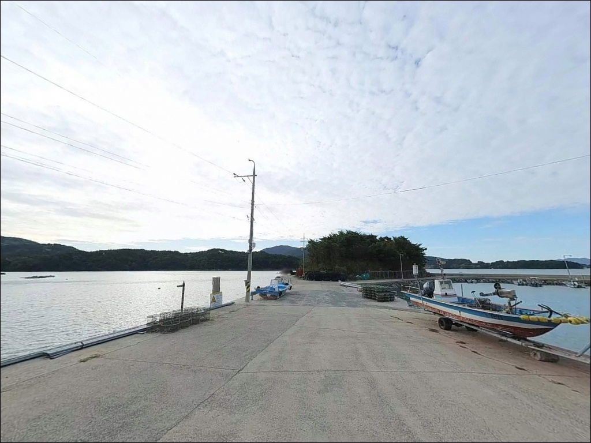
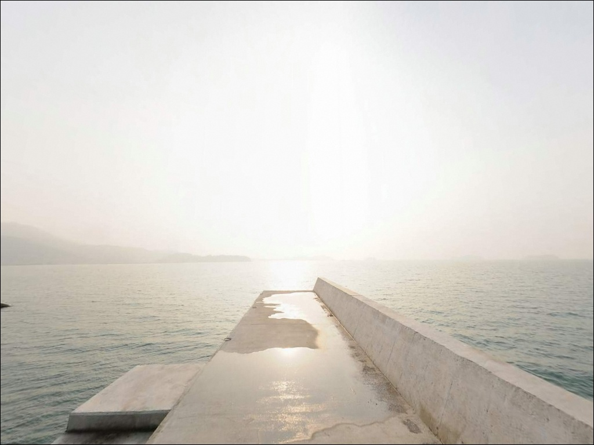
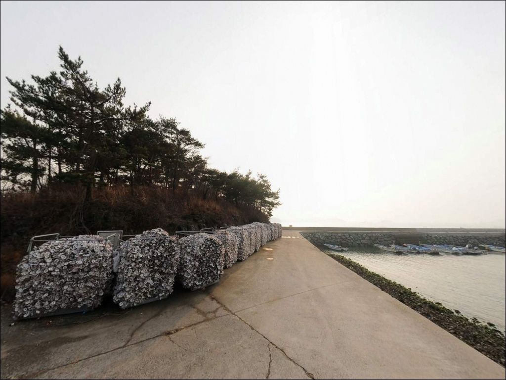
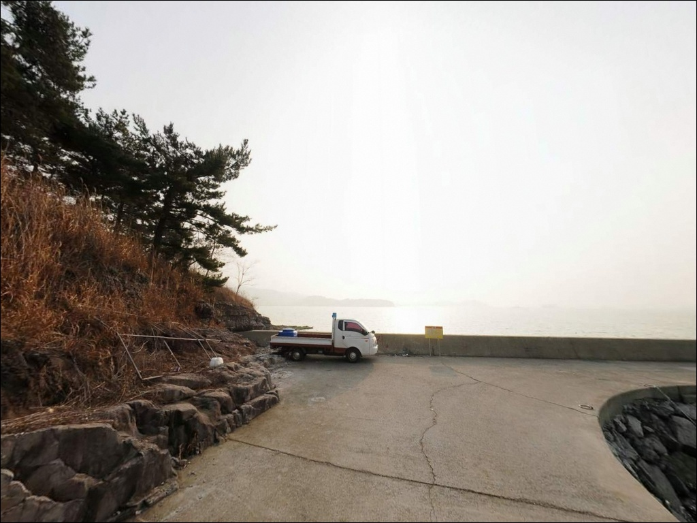
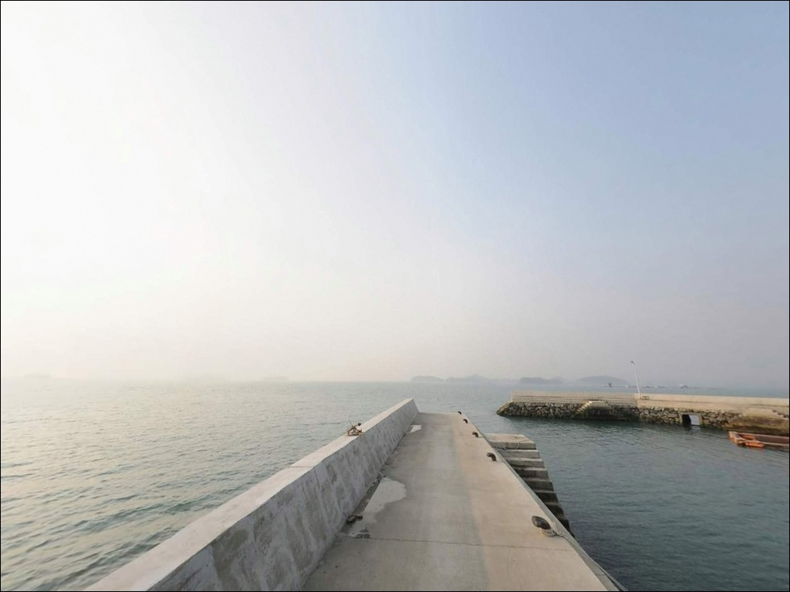
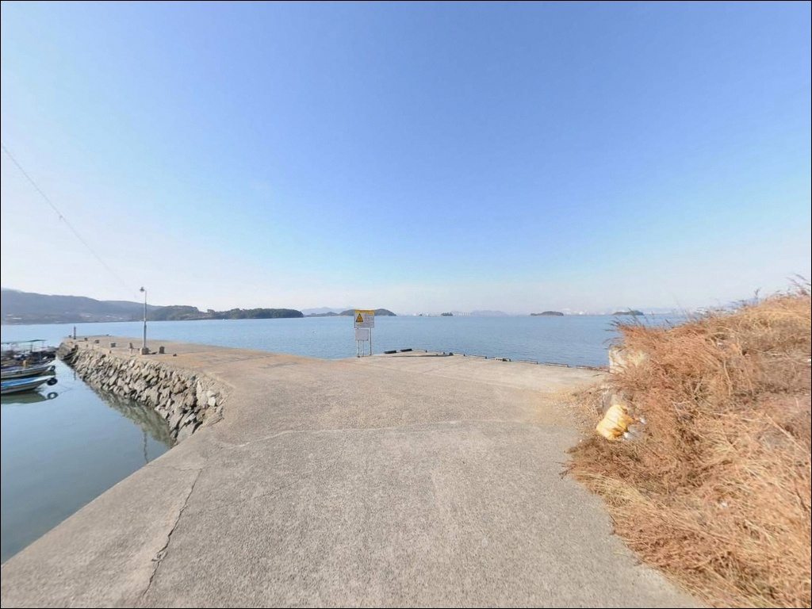
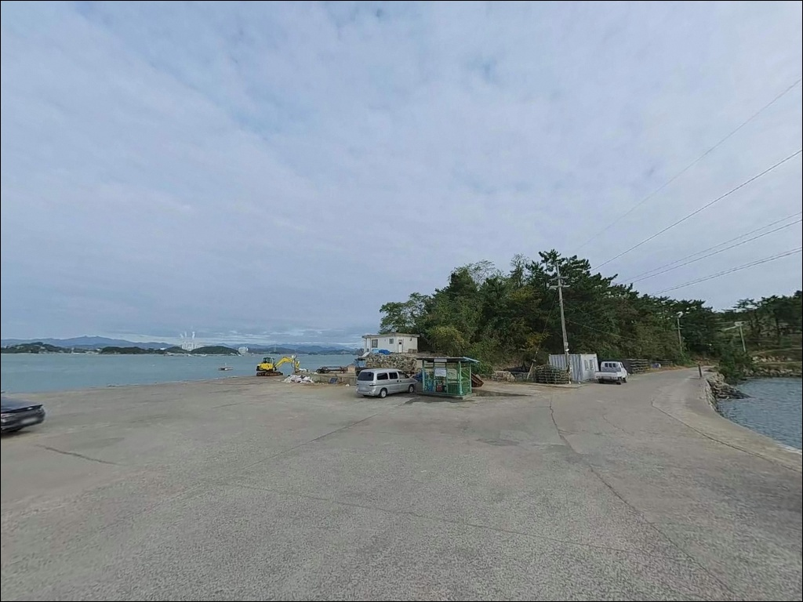

사리 물때엔 채비도 못 버티는 남해 차면방파제, 조금 전후로 맞춘 출조 타이밍
이 페이지에는 광고(제휴 링크 포함)가 있으며, 광고 링크를 통해 구매하면 운영자가 판매 수익 또는 수수료를 받을 수 있습니다. 포인트 사진: 카카오맵 스카이뷰·로드뷰. 이 페이지의 지도·사진 이미지는 카카오맵의 실제 서비스 이미지와 다를 수 있습니다.


포인트 안내
차면방파제
경남 남해군 고현면 차면리 805-11
차면방파제 끝단은 노량해협 물길이 지나는 길목입니다.
사리 전후에는 어떤 채비를 써도
조류를 버티기 어려운 수준으로 빨라지므로,
물때 확인 없이 출발하면 낚시 자리가 있어도
낚시가 되지 않는 상황을 맞닥뜨릴 수 있습니다.
경남 남해군 고현면 차면리,
이순신 호국공원(이락사)과 인접한 차면방파제는
ㄴ자 형태의 메인 방파제와 보조 방파제로 구성된
어촌정주어항입니다.
방파제 정면 수심은 5~7m 내외이며,
수중여가 발달한 바닥 지형이 어종 서식 환경을
자연스럽게 만들어주는 구조입니다.
이 글은 차면방파제의
진입 동선, 차박 여건, 물때 판단 기준,
낚시 스타일별 공략 조건에 집중합니다.
조황 단정이나 특정 어종 보장은
이 글의 범위에 포함되지 않습니다.

1. 진입 동선과 포인트 접근 여건
차면방파제는 1024번 지방도에서
항구로 바로 연결되는 진입 구조입니다.
진입로가 넓고 평탄해
대형 SUV나 캠핑카도
진입과 회차 모두 큰 어려움 없이
소화할 수 있는 수준입니다.
항 내 물량장이 광장처럼 넓어
방파제 시작 지점부터 선착장 안쪽까지
콘크리트 부지가 길게 이어집니다.
낚시 자리 바로 뒤편에서
주차가 가능한 구간이 많아
이동 동선이 짧고 장비 운반이 편리한
구조입니다.
어촌정주어항 특성상
어선 이·출항 시간대에는
물량장 안쪽 공간을 막지 않는 위치를
선택하는 것이 기본 매너입니다.
이른 새벽 출조라면
어선 동선을 먼저 살피고 자리를 정하는 편이 좋습니다.

2. 차박 환경과 야간 체류 여건
차면방파제의 차박 여건은
이 권역 소형 어항 중에서
상대적으로 양호한 편입니다.
항 내 가로등이 잘 갖춰져 있어
야간 낚시와 차박 모두에
기본 조명 환경이 확보되어 있습니다.
이순신 호국공원과 연결된 산책로 덕분에
야간에도 정돈된 분위기를 유지하며,
주변 치안도 비교적 안정적입니다.
바람은 노량해협 방향에서
영향을 받을 수 있으므로
기상 예보상 강풍 예보가 있는 날은
체류 전 다시 한번 확인하는 편이 좋습니다.
물량장 공간이 넓어
여러 대의 차량이 낚시와 숙영을 병행하기에
적합한 구조입니다.
다만 마을 생활권과 가까운 항구인 만큼
야간 소음을 낮추고
취사 잔재물 정리에 각별히 주의해야 합니다.


3. 주변 편의시설 및 인프라 현황
이순신 호국공원 내 공중화장실을
이용할 수 있습니다.
방파제에서 공원 산책로로 바로 연결되는 구조여서
이동 거리가 짧고
별도 이동 수단 없이 화장실 접근이 가능합니다.
정자 쉼터도 공원 내에 마련되어 있습니다.
반경 3km 안에 고현면 소재지가 위치합니다.
농협 하나로마트, 식당, 주유소가
이 일대에 집중되어 있어
물품 수급이 비교적 원활한 편입니다.
출발 전 식수나 연료가 부족하다면
고현면 소재지에서 미리 보충하는 동선이
효율적입니다.
반경 10km 내에는
남해대교 방향 노량항 일대 횟집 거리와
대형 낚시점이 위치합니다.
채비가 부족할 경우
노량항 주변 낚시점을 활용하면
출조 전 준비를 마칠 수 있습니다.

4. 진입 전 반드시 챙겨야 할 준비사항
차면방파제 방문 전에 가장 먼저 확인할 것은
물때입니다.
방파제 끝단은 노량해협 물길이 지나는 길목이어서
사리 전후에는 조류가 매우 빠르게 흐릅니다.
바다타임에서 고현면 기준 물때를 확인하고
조금 전후 또는 5물~8물 구간을 노려
출발 시각을 맞추는 것이 기본 전략입니다.
찌낚시에서 조류가 강할 경우에는
고부력 채비로 전환하는 것이 이 포인트에 맞는
대응 방식입니다.
원투낚시용 봉돌도 평소보다 무거운 것을
여분으로 준비해두면
조류 세기에 따라 유연하게 대응할 수 있습니다.
어촌정주어항이므로
어선 이동 동선과 어구에 접촉하지 않도록
자리를 잡는 것이 기본 매너입니다.
야간 낚시를 계획한다면
헤드랜턴과 구명조끼를 반드시 챙겨야 하며,
노량해협 방향 기상 변화는
현장에서도 수시로 체크하는 습관이 필요합니다.

5. 노량 물길과 맞닿는 지형, 낚시 여건 분석
차면방파제의 핵심은
방파제 끝단이 노량해협 물길과 직접 맞닿는 구조에 있습니다.
ㄴ자로 꺾인 메인 방파제 끝단에서
창조류와 낙조류가 교차하는 구간이 형성되며,
이 흐름이 회유성 어종의 이동 통로 역할을 합니다.
방파제 정면 수심은 5~7m 내외로
남해 북부 소형 방파제 중에서 수심이 충분한 편입니다.
바닥 지형은 모래와 펄이 섞인 혼합 저질이며,
군데군데 수중여가 발달해 있습니다.
수중여 경계선은 어종이 머무는 구간이어서
채비를 그 언저리까지 보내는 방식이
이 포인트의 지형 활용법입니다.
원투낚시는 여밭 경계를 피해
모래 바닥이 이어지는 구간을 탐색하는 방식이 유효합니다.
내항은 석축과 콘크리트 직벽 구조로,
잔잔한 수면 조건이 유지됩니다.
외항 테트라포드 주변과 내항 직벽 아래는
볼락과 노래미가 서식하기 좋은
지형 조건을 갖추고 있습니다.
최신 조황은 출발 전에 반드시 검색해 보시기 바랍니다.


6. 포인트에 어울리는 낚시 스타일
이 포인트에서 가장 폭넓게 활용할 수 있는 방식은
원투낚시입니다.
방파제 외항 측 수심이 5~7m로 확보되어 있고
모래·펄 혼합 바닥이 평탄하게 이어지는 구간이 있어
도다리, 보리멸, 붕장어 등
바닥 어종을 노리기 좋은 조건을 갖추고 있습니다.
찌낚시는 방파제가 꺾이는 지점과
끝단 구간에서 효과적입니다.
조류가 흐르는 시간대에 채비를 흘려
감성돔과 숭어를 노리는 방식이
이 포인트 구조에 잘 맞습니다.
조류가 강한 날에는
고부력 채비를 준비해야 안정적인 운영이 가능합니다.
루어낚시는 야간 시간대에 집중하는 편이 좋습니다.
가로등이 갖춰진 항구 구조여서
야간 가로등 주변으로 볼락 집어가 이루어지는
패턴이 이 포인트에서도 기대됩니다.
지그헤드 채비로 내항 직벽 아래와
외항 테트라 경계를 천천히 탐색하는 방식이 어울립니다.
방파제 끝단은 조류 변화가 가장 크게 나타나는 자리이며,
물때를 맞춘 낚시인에게만 기회가 열리는 포인트입니다.

7. 대안 포인트와 플랜 B 동선
차면방파제 조류가 너무 강하거나
자리 여건이 맞지 않을 때
가장 먼저 검토할 대안은
갈화리 방파제(동갈화항)입니다.
차면리에서 약 2km 거리로,
같은 내만 해역 조건을 공유하면서
방파제 규모가 조금 더 큰 편입니다.
월곡마을 남방파제도 약 1.5km 거리에 있어
빠르게 이동할 수 있는 대안입니다.
갯바위가 혼재하는 구조여서
루어나 찌낚시 위주로
다른 분위기의 낚시를 즐길 수 있습니다.
반경 10km 안에는
노량항 방향의 포인트가 다수 분포합니다.
노량해협 물길을 직접 품은 포인트들로,
차면방파제보다 수심이 깊고
어종 다양성이 높은 구간이 있어
원정형 플랜 B 동선으로 활용할 수 있습니다.
차면방파제는 물때를 맞추고 진입한 낚시인에게
노량 물길이 만드는 조류 변화를 온전히 활용할 수 있는 자리입니다.

물때 하나가 차면방파제의
전부를 바꿉니다
원투낚시, 찌낚시, 루어낚시를 모두 구사하는
낚시인이라면 차면방파제는
스타일 전환 없이 하루를 운용하기 좋은
구조입니다.
방파제 수심과 수중여 지형이
복합 공략을 가능하게 하고,
이순신 호국공원과 연결된 항구 특성이
환경 면에서 이 권역 소형 방파제 중
상위에 속하는 조건을 만들어줍니다.
반면 물때 계산 없이
사리 전후에 방파제 끝단에 서면
채비가 버티지 못하고
낚시 자체가 성립되지 않는 상황을
맞닥뜨릴 수 있습니다.
물때 확인, 채비 무게 여유분 준비, 야간 조명 장비,
이 세 가지를 갖추고 간다면
남해 북부 권역에서 기억에 남는
출조가 될 수 있는 포인트입니다.
넓은 물량장 구조와 공원 화장실 이용까지 더하면
낚시와 차박을 함께 계획하는 여행자에게도
이 일대는 무리 없이 하룻밤을
머물 수 있는 조건을 갖추고 있습니다.